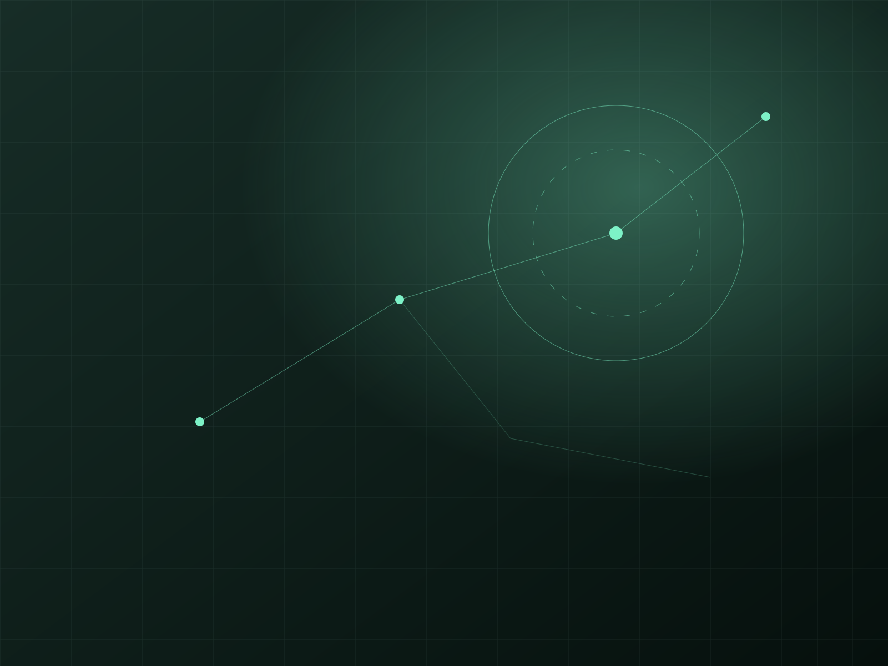

01 / FEATURED SITE대표 연구 사이트 및 연구실 안내

ABOUT THE LAB / 연구실 안내
Welcome to Our Lab.
We explore the future of Cybersecurity. through innovative research.
INFORMATION SECURITY RESEARCH

01 / FEATURED SITE
ABOUT THE LAB / 연구실 안내
We explore the future of Cybersecurity. through innovative research.